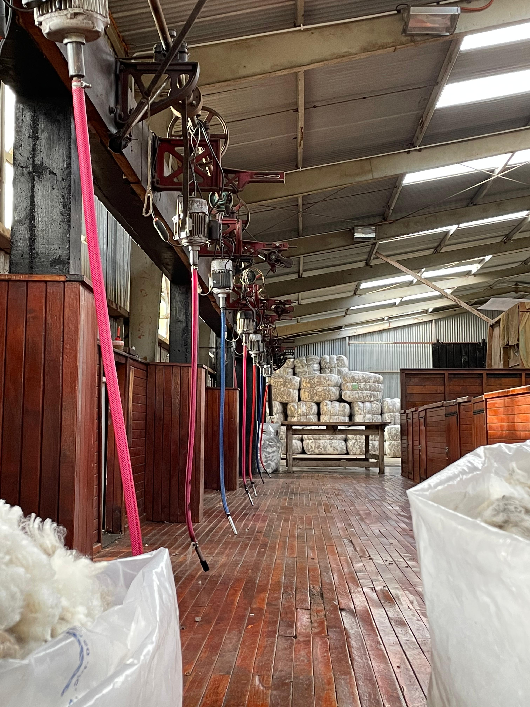

NUESTRA HISTORIA

Maximiliano Adrian Velazquez Kruger 30/11/2023
La Estancia Laguna Esperanza no solo fue un refugio para la familia Rudd, sino también un faro de conservación y un lugar de conexión con la majestuosidad de la Patagonia. A través de los años, su amor por esta tierra se ha transmitido de generación en generación, asegurando que su legado de cuidado y respeto por la naturaleza continúe floreciendo en este rincón mágico de la Patagonia argentina.
Seguir Leyendo
Esquila

Maximiliano Adrian Velazquez Kruger 30/11/2023
La familia Rudd, junto con un grupo de trabajadores locales, se reunía en el corral de esquila. Allí, las ovejas eran reunidas y preparadas para el proceso. Las habilidosas manos de los esquiladores comenzaban a trabajar, cuidando de no lastimar a los animales mientras retiraban su pesado manto de lana. El sonido constante de las maquinas y el aroma a lanolina llenaban el aire.

Seguir Leyendo
En la Estancia Laguna Esperanza, la llegada de la primavera traía consigo una de las tradiciones más importantes del año: la esquila de las ovejas. Los días se alargaban y el sol brillaba sobre las vastas praderas de la estancia, señalando el momento adecuado para realizar esta laboriosa tarea.